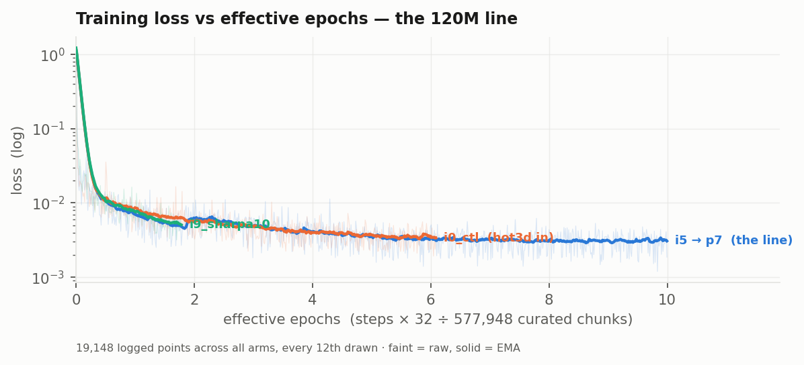
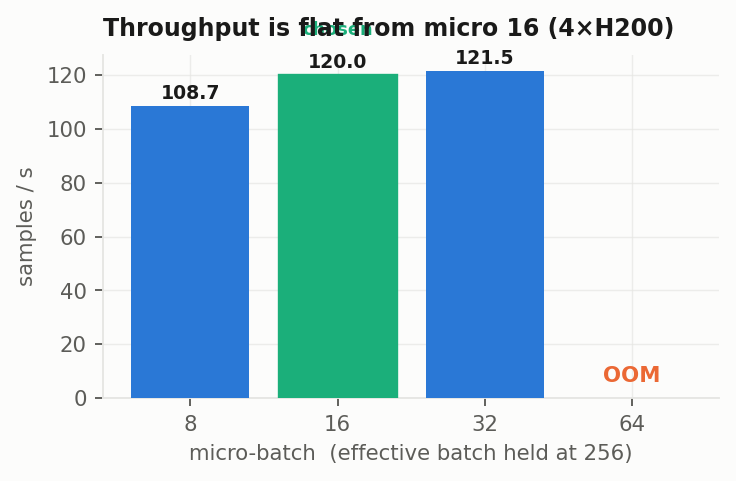
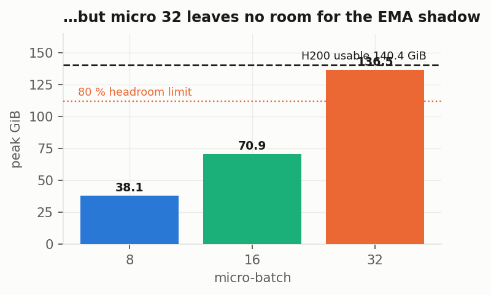

Scale-up, cross-embodiment, closed-loop, contact loss
3D-WAM · four workstreams, one fair axis: effective epochs
Lab meeting
2026. 09. 02 Presented by 김범준 (beomjun)
Overview
[TL;DR] New best beats zero; contact loss dead; scale-up blocked.
p7 at 10 epochs: project best
Contact loss null at every λ
320M still has no result

19,148 logged points across three arms — the blue line is still falling at 10.00 effective epochs
WILL UPDATE
p7 rollout clips @ 10.00 eff ep same chunks, camera, seed as @6.09
Rendering now, job 152592 — the 6.09-epoch clips are not re-used as a stand-in
two bases, never mixed — ieval: stratified 576 chunks (96 × 6 datasets), zero predictor 7.97 cm · Sharpa: 96 TACO chunks, zero 4.99 cm · record ~/3d-wam/P-SERIES.md
Method: the GR-1 tabletop arena, read from source
Their arena, their metric, their command — so the number compares.
78 registered tasks, e.g. PnPAppleToDrawerClose — "pick up the apple, place it into the drawer and close the drawer" · figure from robocasa/robocasa-gr1-tabletop-tasks, credited
Decode is not the bottleneck: 1 mm of point noise costs 1.7°, 3 mm costs 5.0°
WILL UPDATE
GR-1 action layout all 24 indices moved zero joints
Re-measure queued, job 152131 — ≈1 h once it starts; the fix is written
MuJoCo · robosuite 1.5.1 · GR1ArmsAndWaistFourierHands · 17 DoF + 11 hinge joints/hand · ABSOLUTE joint-position actions · 20 Hz, 0.4 s replan vs our 1 s
Results
Scale-up and training length
120M at 10 epochs is the new best; the 320M has none
Cross-embodiment transfer
Contact auxiliary loss

Flat past micro 16: 120.0 vs 121.5 samples/s — micro 64 is out of memory

…and micro 32 costs it: 136.5 of 140.4 GiB, no room for the EMA shadow
WILL UPDATE
320M @ 10.00 eff ep — queued, pod Pending Acc3D ladder, 19 checkpoints — job 152593
13.4 h once admitted, 126/128 MLXP GPUs held · no Acc3D number exists yet, none quoted
Verdict · ieval 576: p7 @ 10.00 eff ep — ADE 7.71 cm under the 7.97 zero predictor, cos 0.295 = 72.8° (hand 0.394 = 66.8°); previous best @6.09 ep was 7.94 / 0.279 = 73.8°. 320M: no result, queue-blocked
effective epochs = steps × effective batch ÷ 577,948 curated chunks — 120M at batch 32, 320M at 256, so raw step counts never compare
Results
Scale-up and training length
Cross-embodiment transfer
10 % Sharpa is free on human, +0.033 cos on the robot
Contact auxiliary loss
Free on human (0.208 both, 78.0°), +0.033 on the robot hand (0.130 → 0.163, 82.5° → 80.6°)
WILL UPDATE
p9 @ 10.00 eff ep 120M + 10 % Sharpa · HELD
Held on decision (b) — 14 h to 3 eff ep, 47.7 h to 10, from release
Verdict · on human Δcos −0.001 [−0.008, +0.005] — free (ieval 576) · on the Sharpa 96-TACO basis ADE 7.04 → 6.00 cm, that basis's own zero being 4.99. Control is i0_ctl, not i5 — i5 also drops hot3d, confounding composition
pairing fixes sequence, chunk start, task, object and scene, so the measured gap is the hand alone · both arms matched at ~32k steps with hot3d in
Results
Scale-up and training length
Cross-embodiment transfer
Contact auxiliary loss
three decades of λ swept, all null, ADE worse in λ
Every CI spans zero — Δcos −0.002 / −0.001 / −0.006 at λ 0.03 / 0.1 / 1.0λ 1.0 starts 40 % higher and never catches up — the aux term is dominating, not helping
Verdict · close this workstream. ieval 576 @ 1.11 eff ep: ADE 8.63 / 8.62 / 8.78 cm vs the i5 baseline's 8.15 — monotonically worse in λ, and no interval clears zero. Ninth architecture addition falsified; the levers stay data composition and training length
λ was picked by measured gradient share (0.1 → 0.73, rejected; 0.03 → 0.22), then swept anyway · harness check: one ckpt under two tags gave Δcos +0.000 [0, 0]
Discussion & Action items
Nothing is training. Three rulings put the GPUs back to work.
Discussion — owner only:
MLXP capacity — 126/128 GPUs held, preemption: not helpful; six pods died with no readable reason → escalate to infra with the job name, we cannot read the scheduler ourselves (today)
The one free GPU — release p9 (47.7 h → 10 eff ep) or hold it for a Slurm 320M DDP fallback → the fallback: cross-embodiment already has a clean answer, scale-up has none (today)
GR-1 embodiment tag — only TAG_HUMAN and TAG_SHARPA are trained, GR-1 is a third → decide by running the rollout both ways, not by argument (before the first closed-loop run)
Action items:
Land p7 rollout clips and the 19-point Acc3D ladder (agent · jobs 152592 / 152593, running)
Re-measure the GR-1 action layout, then the decoded-GT sim replay (agent · job 152131)
Eye-verify the clip galleries — I cannot judge pictures (owner · standing)
ETA · 320M 13.4 h once admitted, admission unestimated · p9 14 h → 3 ep / 47.7 h → 10 ep from release · GR-1 re-measure ≈1 h from start · Acc3D ladder and p7 clips unestimated, both already running
Appendix · evidence · epochs · corrections · cut list
ieval stratified 576 (96 × 6 datasets), zero 7.97 cm, interface-point zero 6.93 · Sharpa 96 TACO, zero 4.99 cm. p7 on interface points: cos 0.340 = 70.1°, ADE 6.81. Never combined in one table.
GR-1
obs adapter validated live: P = 1024 (512 hand + 512 object), 16/16 MANO parts, palm rigidity drift 0.00000 mm. Known issue: the budget is palm-heavy — palm 239 of 512, each finger 6–26; reweighting is queued before any success rate is quoted.
Corrections on the record
"fp32, tensor cores unused" was WRONG — bf16 autocast is live at wam/train/vflow_c.py:105; 141 TFLOP/s/GPU is 210 % of H200 fp32 peak. Real figure 14 % MFU — the lever is torch.compile kernel efficiency, not precision, not the data path.
Data tax is 0.7 / −0.7 / +0.6 % — mmap shards would buy ~0–1 %. Not the fix.
"motion 70 %" = the model under-predicts true motion by 30 % — a finding, not a footnote.
Mean EPE on a heavy-tailed field is dominated by the few fast points — hence Acc3D as primary.
A stale trainer copy on DDN would have trained 4 unsynchronised replicas at a real effective batch of 64 while reporting 256; trees are now byte-identical.